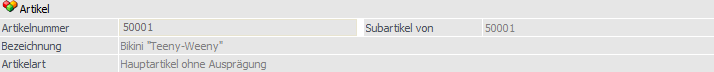
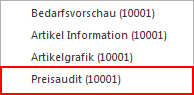
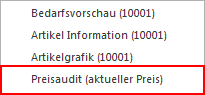

Pro Artikel können in der WinLine FAKT beliebig viele Preislisten angelegt werden, wobei auch Staffelpreise, Aktionspreise, kundenindividuelle Preise, kundengruppenspezifische Preise, etc. möglich sind.
Das Preisfindungssystem ist dabei hierarchisch aufgebaut und Abhängigkeit von folgenden Faktoren:
ü Preisliste
ü Kontrakten
ü Kunde / Lieferant
ü Kunden-/ Lieferantengruppe
ü Datum
ü Abnahmemenge
Hinweis
Bis auf Kontraktpreise können sämtliche Preistypen im Register "Preise" hinterlegt und gepflegt werden.

Das Register "Preise" ist in die folgenden Unterregister unterteilt, welche in den nachfolgenden Kapiteln detailliert beschrieben werden:
ü Unterregister "Preise"
In dem
Unterregister "Preise" werden alle Preisrelevanten Daten für den Artikel
hinterlegt.
ü Unterregister "Konten"
In dem
Unterregister "Konten" können die Sachkonten für die WinLine FIBU-Übergabe,
sowie die Umsatzsteuerzuordnung, hinterlegt werden.
Hinweis
Das zuletzt ausgewählte Unterregister wird benutzerspezifisch gespeichert und automatisch bei der nächsten Anwahl des Registers "Preise" geöffnet.
Der Bereich "Artikel" ist unabhängig von dem gewählten Unterregister und steht immer zur Verfügung.
Artikel

Ø Artikelnummer
An dieser Stelle wird die Artikelnummer des ausgewählten Artikels angezeigt.
Ø Subartikel von
Handelt es sich bei dem aktuellen Artikel preistechnisch um einen Subartikel eines anderen Artikels, so wird hier die Artikelnummer des sogenannten Hauptartikels angezeigt und alle folgenden Felder sind für eine Eingabe gesperrt. Handelt es sich nicht um einen Subartikel, so wird an dieser Stelle die Artikelnummer des aktuellen Artikels dargestellt.
Ø Bezeichnung
Hier wird die Bezeichnung des aktuell gewählten Artikels dargestellt.
Ø Artikelart
An dieser Stelle wird die Art des Artikels ausgewiesen, d.h. ob es sich z.B. um einen Artikel mit oder ohne Ausprägungen handelt.
Ø Lagerführung
Handelt es sich bei dem Artikel um einen Artikel, welcher in 2 Mengen geführt wird, so wird neben der Artikelart die statische Information "Lagerführung in 2 Mengen" angezeigt.
Hinweis zum Thema "Preisaudit"
Das Preisaudit zeichnet alle Veränderungen am Preis auf und wird über das "Variablen Audit" (WinLine ADMIN - Audit - Variablen Audit - Tabelle "043 - Preisliste") aktiviert.
Neben dem Auswertungsprogramm "Preisaudit" (WinLine FAKT - Auswertungen - Artikelliste - Preisaudit) ist es auch möglich das Audit über die rechte Maustaste im Artikelstamm aufzurufen. Hierbei wird zwischen allen Einträgen des Artikels (rechte Maustaste irgendwo in den Artikelstamm) und Einträgen eines speziellen Preises (rechte Maustaste auf den Preislisteneintrag) unterschieden.


Durch Anwählen dieses Eintrages wird die Auswertung des Preisaudits gestartet und automatisch auf den "aktuellen" Artikel eingegrenzt.
Steht der Focus in der Preistabelle (Register "Preise" - Unterregister "Preise" bzw. Register "Lief."), so wird das Preisaudit zusätzlich auf diese Preiszeile eingegrenzt.